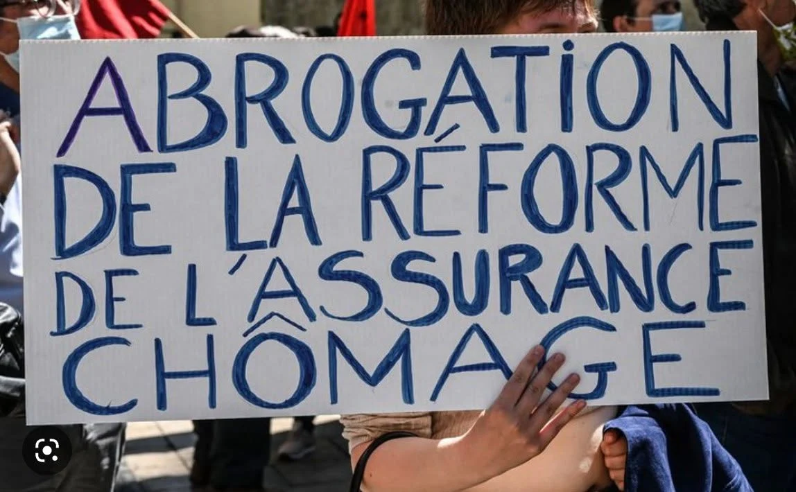

Publication d’archives
Infâme: à Noël Macron dépouille les chômeurs
Date indiquée par Facebook · 30 décembre 2022
Texte conservé avec la publication
Contexte du dossier
Le 22 novembre, la page reprend une intervention d’Éliane Assassi, présidente du groupe CRCE. La sénatrice critique une loi donnant au gouvernement la main sur les conditions d’indemnisation, le durcissement lié à l’abandon de poste et au refus de CDI, et la modulation des droits selon la conjoncture. Elle leur oppose une sécurité sociale professionnelle. Ses exemples chiffrés exposent l’argumentaire parlementaire de 2022 ; ils ne constituent pas un calcul individuel de droits actuels.
Le billet du 29 novembre dénonce ensuite le contraste entre la stigmatisation des chômeurs et les nominations d’anciens responsables gouvernementaux. Sa liste mêle nominations et hypothèses : nous n’en faisons pas un relevé indifférencié de faits accomplis. Enfin, le 30 décembre, un texte alerte sur une réduction supplémentaire envisagée dans un projet de décret. Il s’agit d’une alerte datée sur un projet, pas du constat de sa mise en œuvre.

Sources
Archive rouge · export Facebook · AR-0002-FB-01789
À lire aussi · Personne ne fait grève par plaisir.